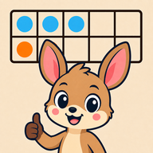
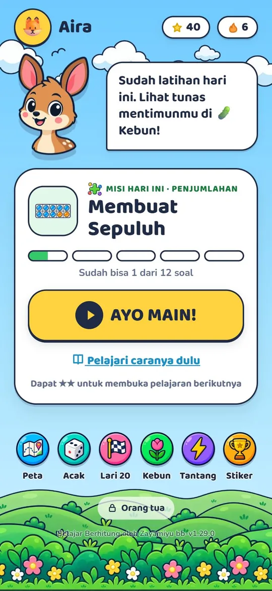
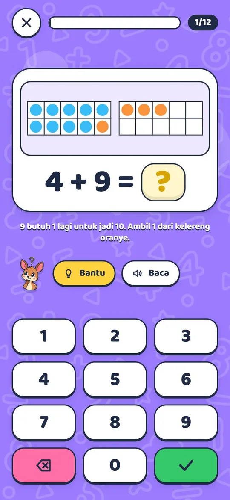
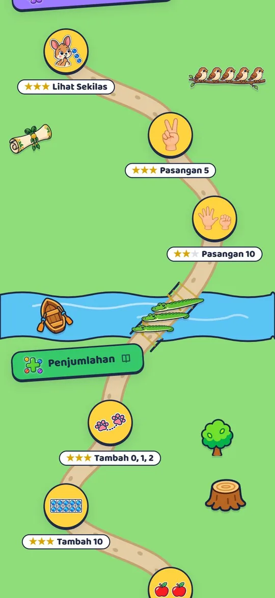
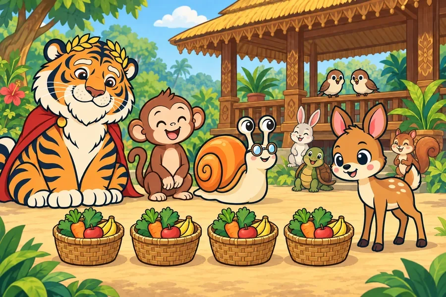

Belajar Berhitung
Untuk anak kelas 1 sampai 3 SDFor children in grades 1 to 3
Banyak anak SD masih berhitung dengan jari, satu per satu. Belajar Berhitung mengajarkan cara berpikir yang dipakai anak yang lancar berhitung: pasangan sepuluh, penjumlahan kembar, membuat sepuluh, keluarga bilangan, puluhan dan satuan, sampai perkalian dan pembagian. Semuanya dalam 34 pelajaran pendek yang dibungkus cerita perjalanan Kancil.
Many Indonesian primary school children still count on their fingers, one by one. Belajar Berhitung teaches the thinking strategies fluent children use instead: bonds to ten, doubles, making ten, fact families, tens and ones, all the way to multiplication and division. Everything is organised into 34 short lessons, wrapped in a folk-tale journey with Kancil the mouse-deer.
- Strategi, bukan hafalan. Tiap pelajaran punya alat peraga: bingkai sepuluh, garis bilangan, dan susunan titik.
- Strategies, not rote memorisation. Every lesson comes with a visual model: ten-frames, number lines and dot arrays.
- Bantu yang memberi cara, tidak pernah jawaban. Seluruh soal dan petunjuknya diperiksa oleh lebih dari 35.000 pemeriksaan otomatis.
- Hints that give a method, never the answer. All problems and hints are verified by more than 35,000 automated checks.
- Pengulangan berjarak. Soal yang sering salah muncul lagi di hari lain sampai benar-benar melekat.
- Spaced repetition. Facts a child gets wrong come back on later days until they stick.
- Tanpa akun, tanpa iklan, bisa dipakai tanpa internet. Dipasang di iPhone, iPad, Android, dan komputer.
- No account, no ads, works offline. Installs on iPhone, iPad, Android and desktop.



Claude bekerja untuk orang tua, tidak berbicara dengan anak.Claude works for parents. It never talks to children.
Kami memakai Claude dari Anthropic di tempat yang paling berguna dan paling aman: membantu orang tua memahami perkembangan anaknya. Anak tidak pernah mengetik apa pun ke AI, dan tidak pernah membaca teks buatan AI yang belum diperiksa.
We use Anthropic's Claude where it is most useful and safest: helping parents understand how their child is progressing. Children never type anything to an AI and never read unreviewed AI-generated text.
Laporan mingguan untuk orang tuaWeekly report for parents
Claude membaca ringkasan latihan tujuh hari terakhir, lalu menulis perkembangan anak dalam bahasa sehari-hari: kemajuannya, yang perlu diperhatikan, dan kegiatan singkat di rumah yang sejalan dengan pelajaran yang sedang ditempuh.
Claude reads a summary of the past seven days of practice and writes up the child's progress in plain Indonesian: what improved, what needs attention, and short at-home activities that match the current lesson.
- Orang tua menyalakan laporan dari menu Orang tua, setelah membaca daftar data yang dikirim. Mati secara bawaan.
- The parent switches the report on from the parent area, after reading exactly which data is sent. It is off by default.
- Aplikasi menyusun ringkasan angka dan judul pelajaran, tanpa nama anak.
- The app builds a summary of numbers and lesson titles, without the child's name.
- Server kami membuang data di luar daftar, lalu meminta Claude menulis laporan dalam format JSON yang tetap.
- Our server drops any field outside an allow-list, then asks Claude for the report in a fixed JSON schema.
- Server memeriksa jawaban Claude: panjang, tanpa tautan, dan tanpa label diagnosis. Yang tidak lolos tidak ditampilkan.
- The server validates Claude's answer: length, no links, and no diagnostic labels. Anything that fails is never shown.
Petunjuk yang menyesuaikan kesalahan anakHints that adapt to the child's mistake
Kode aplikasi mengenali jenis kesalahan, misalnya selisih satu atau tertukar tambah dan kurang. Claude membantu merangkai kalimat petunjuk yang sesuai. Petunjuk yang sudah teruji tetap menjadi cadangan.
The app recognises the type of mistake, such as off-by-one or a swapped operation, and Claude helps phrase a matching hint. Our tested hand-written hints remain the fallback.
Soal cerita dengan konteks IndonesiaWord problems in a local context
Claude membantu menyusun soal cerita yang dekat dengan keseharian anak Indonesia. Setiap soal ditinjau guru SD dulu sebelum masuk ke aplikasi, jadi anak tidak pernah menerima teks AI mentah.
Claude helps draft word problems grounded in Indonesian children's everyday life. Every problem is reviewed by a primary school teacher before it enters the app, so children never receive raw AI text.
Prinsip yang tidak kami tawar.Principles we do not compromise on.
Tanpa obrolan dengan AINo chat with AI
Anak tidak pernah mengetik teks bebas ke AI. Tidak ada fitur obrolan.
Children never type free text to an AI. There is no chat feature.
Data tetap di perangkatData stays on the device
Progres belajar tersimpan di perangkat anak. Tidak ada akun, iklan, atau pelacak.
Learning progress is stored on the child's device. No accounts, no ads, no trackers.
Orang tua yang memutuskanParents decide
Fitur AI mati secara bawaan dan hanya menyala atas persetujuan orang tua.
AI features are off by default and only switched on with parental consent.
Data minimalMinimal data
Yang dikirim ke Claude hanya angka dan judul pelajaran. Nama dan gambar profil tidak pernah dikirim.
Only numbers and lesson titles are sent to Claude. Names and profile pictures are never sent.
Jawaban AI diperiksaAI output is checked
Format tetap, batas panjang, dan larangan label diagnosis diperiksa di server sebelum apa pun ditampilkan.
Fixed schema, length limits and a ban on diagnostic labels are enforced on the server before anything is shown.
Kunci hanya di serverKeys stay server-side
Kunci API tersimpan di server, tidak pernah ada di aplikasi yang dipasang di perangkat.
API keys live on the server only, never inside the app on the device.
Baca kebijakan privasi lengkapRead the full privacy policy (Indonesian)
Dimulai dari meja belajar di rumah.It started at the study table at home.
Zayamiyu didirikan oleh Muhammad, seorang ayah di Indonesia. Belajar Berhitung lahir dari kebutuhan di rumah sendiri: anaknya yang duduk di kelas 2 SD masih menghitung dengan jari, dan belum ada aplikasi berbahasa Indonesia yang mengajarkan strategi berpikirnya dengan sabar.
Zayamiyu was founded by Muhammad, a father in Indonesia. Belajar Berhitung grew out of a need at home: a second-grader in the family still counted on fingers, and no Indonesian-language app taught the underlying thinking strategies patiently.
Kami membangun pelan-pelan dan teliti: setiap pelajaran, petunjuk, dan cerita diuji dengan anak sungguhan dan dengan ribuan pemeriksaan otomatis sebelum dirilis.
We build slowly and carefully: every lesson, hint and story is tried with a real child and checked by thousands of automated tests before release.

Ada pertanyaan atau ingin mencoba bersama sekolah Anda?Questions, or want to try it with your school?
Instagram: @zayamiyu